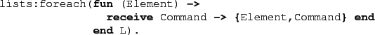

Next: Compilation Up: Compiling Erlang code using Previous: Translation Phase Contents
Unfortunately the transformation is not fool-proof, the fundamental problem is that the transformation must potentially modify all the source code of an Erlang system. All the code locations (not in a tail position) from which a receive statement may eventually be called must be modified. As there is no Erlang source code for parts of the distribution (because they are implemented in C) we have no choice but to replace those parts with equivalent parts in pure Erlang.
As an example, consider the translation of the following
code fragment:

Apart from transforming the receive statement itself,
the transformation must potentially also modify the anonymous function in which
the receive statement resides. Here this is not necessary, as the
receive statement occurs in a tail position.
Moreover, the transformation must also modify the lists:foreach
function. Obviously we can use the source code of the lists module;
however there is a problem. Not all functions provided by the
lists module are actually implemented in Erlang. Thus we have
no choice but to provide a slightly modified version of the module
(mce_erl_lists)
with McErlang. By default the modified library module is used, however a user
can choose to use the standard module instead (by overriding the mapping
from lists to mce_erl_lists in ``funinfo.txt'').
This may be safe, if no function passed to any function in lists
can ever execute a return statement (the static analyser that the
transformation phase implements is generally not intelligent enough
to discover such possible optimisations).
As we have not analysed all standard Erlang modules for such problems, nor have we provided alternative implementations for all cases needed, there is a risk that a program may exhibit different behaviour running under McErlang than under the normal Erlang runtime system. Concretely, functions may have arguments which contain unexpected special return values, or special return values may be silently ignored.
Another concern is memory efficiency. In a model checker it is generally important to save memory space. Thus some data structures, although highly efficient in terms of execution speed, can waste too much memory space (examples may include the dict module).
2010-07-05